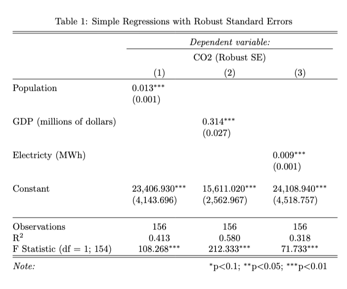
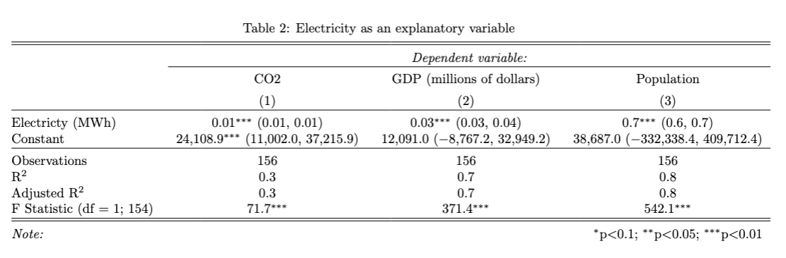
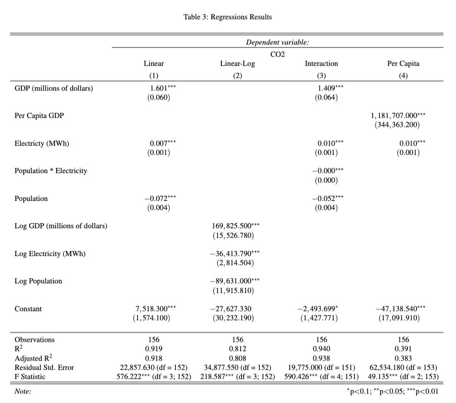

# If any of the packages happened to not be installed for you, use the command install.packages() with the name of the packages, like 'stargazer'
library(ggplot2)
library(haven)
library(stargazer)
library(tidyverse)
library(sandwich)
source("intermediate_stargazer_tests.r")2.2 - Intermediate - Working with Stargazer
econ 326
intermediate
R
regressions
stargazer
tables
results
summary statistics
This notebook covers how to make neat and easily digestible regression and summary statistics tables in R using the
stargazer package.
Outline
Introduction
One crucial part of any research project is presenting the results to others in ways that are accessible and easy to understand. This notebook will go over how to use stargazer, which is a convenient package built for R that allows us to present the results of regressions in simple, well-formatted tables using very little code.
For the purposes of this notebook, we’ll be using data from another module the example project for ECON326. We suggest taking a look at this before getting started if you’d like more information on where the data came from and how it was cleaned!
Let’s get started by importing all of the packages that we will use through out this module!
Note
Hlavac, Marek (2022). stargazer: Well-Formatted Regression and Summary Statistics Tables. R package version 5.2.3. https://CRAN.R-project.org/package=stargazer
Development and the Planet
For this module, we will be continuing with the project started in the example project for ECON326. This project studied the connection between the production of [\(CO_2\)] and GDP in Canada.
As the Government of Canada declared a national climate emergency, the greenhouse gas carbon dioxide [\(CO_2\)] has gotten a lot of attention. While there are many other gasses that contribute to to the atmospheric greenhouse effect, [\(CO_2\)] is one of the most immediate concerns because of its role in industrialization and energy use. In general, a rising GDP is a desirable outcome, but we might wonder whether all other outcomes associated with a higher GDP are advantageous. What are the implications of assuming that there can infinite GDP growth when it’s connected to finite measures such as the amount of [\(CO_2\)] that can be sustainably produced and recaptured? Is this just a reflection of what our current energy sources and technology allow, or is there more to the story in how we think about economic growth in general?
Summary Statistics
It is really important to first create a summary of the data which we can do using the stargazer package. Before doing so, we want to import and clean the data which was done in a separate notebook you can look at here: the example project for ECON326. Now we can use the commmand stargazer(<your data frame here>) to get summary statistics for your dataset.
Note: Below we used
as.data.frame(<your data frame here>)to covert the data frame into a readable format forstargazer. Your table won’t look right unless you do this!
#First we will import the data
raw_co2_df <- as.data.frame(read_csv("../datasets_projects/CO2_data.csv"))
#Second, we will select the variables we need for analysis
co2_df <- select(raw_co2_df, c("province", "CO2", "GDP", "electricity", "population"))We can easily create a table of summary statistics using the stargazer package. All we need to do is run the commang stargazer(data). Try it below!
summary1 <- stargazer(co2_df)This looks weird - that is because stargazer’s default output is in LaTex form. If you are using LaTex, you can copy the output below directly into your file. However, if you are using other software, it will be easier to output your table in text form. To do so, we can specify that we want the type = "text". Try this below!
summary2 <- stargazer(co2_df, type = "text")It’s starting to look pretty good! However, we’re missing some things. Currently, our table has no title. We’ll want to fix this. This is easy using the stargazer command. We just need to specify title = "Whatever you Want!". See below:
summary3 <- stargazer(co2_df, type = "text", title = "Descriptive Statstics")In professional academic papers, we will want to make sure our tables are capable of standing alone. This means that anyone who looks at your table should be able to read it and understand it without having read any parts of your paper. Some things that make this easier include labelling your variables properly: using full words and not abbreviations, capitalizing, and including units. Let’s relable the variables that we’re using for this analysis by including the option covariate.labels = c("Variable name 1", "Variable name 2", "Variable name 3", ...).
summary4 <- stargazer(co2_df, type = "text", title = "Descriptive Statistics", covariate.labels = c("CO2 (kt)", "GDP (millions of dollars)", "Electricty (MWh)", "Population"))Our table is looking good, but we have a lot of trailing zeroes. This will make our table harder to read, as it can be clunky and add unnecessary digits. To fix this, we can specify how many digits after the decimal we want. Let’s say we want one digit after the decimal: just include digits = 1!
summary5 <- stargazer(co2_df, type = "text", title = "Descriptive Statistics", digits = 1, covariate.labels = c("CO2 (kt)", "GDP (millions of dollars)", "Electricty (MWh)", "Population"))The last thing we’ll want to do is export this table to our local folder. This will make it easier to keep track of everything we’re working on, and save our work for later. This can be done by adding the option out = "filename.tex" to the stargazer command. If you are using LaTex, you will want to select the option type = "latex" and ensure that the output ends in .tex. The file will save to your working directory.
summary6 <- stargazer(co2_df, type = "text", title = "Descriptive Statistics", digits = 1, covariate.labels = c("CO2 (kt)", "GDP (millions of dollars)", "Electricty (MWh)", "Population"), out = "descriptive")Regression Tables
The biggest advantage of the stargazer package is it’s ability to make great regression tables with very simple code. The syntax to make regression tables is identical to that of summary statistics tables, with a few additional options. We’ll go over these shortly.
Before we make the tables, we need to run some regressions and save these models. As before, we’re going to follow what was done in the Example Project for ECON326.
Let’s start with the simple regressions from the project to demonstrate the basics of stargazer’s regression tables.
slr_1 <- lm(CO2 ~ GDP, data = co2_df)
slr_2 <- lm(CO2 ~ electricity, data = co2_df)
slr_3 <- lm(CO2 ~ population, data = co2_df)
mlr_1 <- lm(CO2 ~ GDP + electricity + population, data = co2_df)To make a regression table using stargazer, we follow similar syntax as before. Rather than specifying a dataframe as our input, we will use our models. As before, we can export in text format, include a title, round the results, and rename the variables. The final command will look like stargazer(model1, model2, model3, type = "text", title = "Your Title", digits = #, covariate.labels = c("Variable Name 1", "Variable Name 2")), out = "filename". Let’s try this with the models we ran above.
stargazer(slr_1, slr_2, slr_3, mlr_1,
type = "text", title = "Results",
digits = 1,
covariate.labels = c("GDP (millions of dollars)", "Electricty (MWh)", "Population"),
out = "results_1")As you can see, stargazer does a lot! This simple command has not only included our regression results in a clean and easily-readable table, but it has also included stars for statistically significant coefficients, the number of observations, the \(R^2\) value, and more.
Let’s now discuss some formatting adjustments that stargazer can do to clean up our regression tables even more.
- We can remove empty lines from our table to make it more succinct by using the option
no_space. All we need to do is addno_space = TRUEat the end of the command. - We can label our dependent variable. Just like with covariates, we just need to include
dep.var.labels = c("Variable Name")in the command. - We can omit some statistics that may not be relevant for our paper. To do so, we just include the option
omit.stat = c("statistic 1", "statistic 2").
- The opposite of this option is
keep.stat = c("statistic 1", "statistic 2"), where we would list out the statistics we want to keep. This can be useful if, for example, you only want to keep one statistic. - Some of the names for the statistics are abbreviated differently than what appears in the summary of the model. You can find a list of the codes that
stargazeruses for statistics here.
- We can align the coefficients in each column using the option
align = TRUE. - We can place the standard errors in line with the point estimates by including the option
single.row = TRUE. - We can reorder the explanatory variables using the option
order. All that’s needed is to write outorder = c("Variable 1", "Variable 2")with the variables in the order that you’d like.
- Be sure to adjust
covariate.labelsto reflect the new order you specified!
Putting it all together, we get:
stargazer(slr_1, slr_2, slr_3, mlr_1,
type = "text",
title = "Results",
digits = 1,
covariate.labels = c("GDP (millions of dollars)", "Population", "Electricty (MWh)"),
order = c("GDP", "population", "electricity"), #reordering the variables to have GDP first, population second, and electricity third
nospace = TRUE,
dep.var.labels = c("CO2"),
omit.stat = c("ser"), # residual standard error
align = TRUE,
single.row = TRUE,
out = "results_2")You don’t necessarily want to include all of these options in every one of your tables. For example, standard economics papers place the standard errors below the point estimates, so you wouldn’t need to include single.row = TRUE. It’s up to you to see what works best to present your results in meaningful ways that will engage the reader!
Another thing we can do using stargazer is include confidence intervals instead of standard errors. This can be useful if, for example, you want to discuss the upper and lower bounds of your estimates, or if you want to show that your point estimates are very far from zero. To do so, we include the options ci = TRUE and ci.level = value where value is the confidence interval in decimal value (typically this would be 0.90 or 0.95).
stargazer(slr_1, slr_2, slr_3, mlr_1,
type = "text",
title = "Results",
digits = 1,
covariate.labels = c("GDP (millions of dollars)", "Electricty (MWh)", "Population"),
nospace = TRUE,
dep.var.labels = c("CO2"),
omit.stat = c("ser"), # residual standard error
align = TRUE,
ci = TRUE,
ci.level = 0.95,
out = "results_3")The last thing we’ll go over is how to include special standard errors in your tables.
Remember that homoskedasticity, or constant variance, is an underlying assumption of OLS. Knowing that heteroskedasticity is another common issue in regression, we usually want to run our regressions with heteroskedasticity-robust standard errors. To do so, we use the sandwich package (more details about this can be found in the Example Project Module).
# The initial regression that we ran
mlr_1 <- lm(CO2 ~ gdp + population + electricity, data = CO2_data)
# Obtain robust standard errors
robust_se <- sqrt(diag(vcovHC(mlr_1, type = "HC1"))) # "HC1" is one of the robust variance estimatorsWe’ll use stargazer to make a table that has two columns, one that has our point estimates with the original standard errors, and another that includes our point estimates with original standard errors (both using the multiple regression model).
To specify the standard errors we’d like to use, we can add the option se = list(SE_1, SE_2) to our original command. Our default standard errors are called NULL and our robust ones are robust_se, so we will specify those in our command.
It might also be useful in this case to include column labels so that readers know what the difference between our two columns represent. We’ll do so by specifying column.labels = c("column 1", "column 2").
stargazer(mlr_1, mlr_1, # you need to specify the model twice so that R makes two columns, one for default SEs and one for robust SEs
type = "text",
title = "Results",
digits = 1,
se = list(NULL, robust_se),
column.labels = c("Default", "Robust"),
covariate.labels = c("GDP (millions of dollars)", "Electricty (MWh)", "Population"),
dep.var.labels = c("CO2"),
keep.stat = c("n","rsq"), # residual standard error
align = TRUE,
out = "results_5")And there you have it! We can now make simple, neat, and accessible tables in R using stargazer’s many options. Try it out for yourself using your own data to see which options work best for your project!
Exercises
Try the exercises below to test your abilities. We’ve created three different tables using stargazer. Try to replicate them to the best of your abilities! We’ve included the code used to make the tables below for you to check your work.
Exercise 1

model_1 <- lm(... ~ ..., data = ...)
robust_se_1 <- sqrt(diag(vcovHC(..., type = "...")))
model_2 <- lm(... ~ ..., data = ...)
robust_se_2 <- sqrt(diag(vcovHC(..., type = "...")))
model_3 <- lm(... ~ ..., data = ...)
robust_se_3 <- sqrt(diag(vcovHC(..., type = "...")))
# uncommment the options that belong in this table
table_1 <- stargazer(..., ..., ...,
type = "text",
#title = "...",
#digits = ...,
#covariate.labels = c("..."),
#dep.var.labels = c("..."),
#column.labels = c("...")
#se = list(...),
#ci = ...,
#ci.level = ...,
#keep.stat = c(...),
#omit.stat = c(...),
#align = ...,
#single.row = ...,
#nospace = ...
)
test_1()Exercise 2

model_4 <- lm(... ~ ..., data = ...)
model_5 <- lm(... ~ ..., data = ...)
model_6 <- lm(... ~ ..., data = ...)
# uncommment the options that belong in this table
table_2 <- stargazer(..., ..., ...,
type = text,
#title = "...",
#digits = ...,
#covariate.labels = c("..."),
#dep.var.labels = c("..."),
#column.labels = c("...")
#se = list(...),
#ci = ...,
#ci.level = ...,
#keep.stat = c(...),
#omit.stat = c(...),
#align = ...,
#single.row = ...,
#nospace = ...
)
test_2()Exercise 3

model_6 <- lm(... ~ ..., data = ...)
robust_se_6 <- sqrt(diag(vcovHC(..., type = "...")))
#we might need new variables for this table...
co2_df <- co2_df %>%
mutate(ln_gdp = ...) %>%
mutate(ln_electricity = ...) %>%
mutate(ln_pop = ...)
model_7 <- lm(... ~ ..., data = ...)
robust_se_7 <- sqrt(diag(vcovHC(..., type = "...")))
model_8 <- lm(... ~ ..., data = ...)
robust_se_8 <- sqrt(diag(vcovHC(..., type = "...")))
#more new variables??
co2_df <- co2_df %>%
mutate(per_capita_gdp = ...)
model_9 <- lm(... ~ ..., data = ...)
robust_se_9 <- sqrt(diag(vcovHC(..., type = "HC1")))
table_3 <- stargazer(..., ..., ..., ...,
type = "text",
#title = "...",
#digits = ...,
#covariate.labels = c("..."),
#dep.var.labels = c("..."),
#column.labels = c("...")
#se = list(...),
#ci = ...,
#ci.level = ...,
#keep.stat = c(...),
#omit.stat = c(...),
#align = ...,
#single.row = ...,
#nospace = ...
)
test_3()ANSWERS
Exercise 1
model_1 <- lm(CO2 ~ population, data = co2_df)
robust_se_1 <- sqrt(diag(vcovHC(model_1, type = "HC1")))
model_2 <- lm(CO2 ~ GDP, data = co2_df)
robust_se_2 <- sqrt(diag(vcovHC(model_2, type = "HC1")))
model_3 <- lm(CO2 ~ electricity, data = co2_df)
robust_se_3 <- sqrt(diag(vcovHC(model_3, type = "HC1")))
table_1 <- stargazer(model_1, model_2, model_3,
type = "text",
title = "Simple Regressions with Robust Standard Errors",
digits = 3,
covariate.labels = c("Population", "GDP (millions of dollars)", "Electricty (MWh)"),
dep.var.labels = c("CO2 (Robust SE)"),
#column.labels = c("...")
se = list(robust_se_1, robust_se_2, robust_se_3),
#ci = ...,
#ci.level = ...,
keep.stat = c("n","rsq","f"),
#omit.stat = c(...),
align = TRUE
#single.row = ...,
#nospace = ...
)
test_1()Exercise 2
model_4 <- lm(CO2 ~ electricity, data = co2_df)
model_5 <- lm(GDP ~ electricity, data = co2_df)
model_6 <- lm(population ~ electricity, data = co2_df)
table_2 <- stargazer(model_4, model_5, model_6,
type = "text",
title = "Electricity as an explanatory variable",
digits = 1,
covariate.labels = c("Electricty (MWh)"),
dep.var.labels = c("CO2", "GDP (millions of dollars)", "Population"),
#column.labels = c("...")
#se = list(...),
ci = TRUE,
ci.level = 0.95,
#keep.stat = c(...),
omit.stat = c("ser"),
#align = ...,
single.row = TRUE,
nospace = TRUE)
test_2()Exercise 3
model_6 <- lm(CO2 ~ GDP + electricity + population, data = co2_df)
robust_se_6 <- sqrt(diag(vcovHC(model_6, type = "HC1")))
co2_df <- co2_df %>%
mutate(ln_gdp = log(GDP)) %>%
mutate(ln_electricity = log(electricity)) %>%
mutate(ln_pop = log(population))
model_7 <- lm(CO2 ~ ln_gdp + ln_electricity + ln_pop, data = co2_df)
robust_se_7 <- sqrt(diag(vcovHC(model_7, type = "HC1")))
model_8 <- lm(CO2 ~ GDP + population*electricity, data = co2_df)
robust_se_8 <- sqrt(diag(vcovHC(model_8, type = "HC1")))
co2_df <- co2_df %>%
mutate(per_capita_gdp = GDP/population)
model_9 <- lm(CO2 ~ per_capita_gdp + electricity, data = co2_df)
robust_se_9 <- sqrt(diag(vcovHC(model_9, type = "HC1")))
table_3 <- stargazer(model_6, model_7, model_8, model_9,
type = "text",
title = "Regressions Results",
digits = 3,
covariate.labels = c("GDP (millions of dollars)", "Per Capita GDP", "Electricty (MWh)", "Population * Electricity", "Population", "Log GDP (millions of dollars)", "Log Electricity (MWh)", "Log Population"),
dep.var.labels = c("CO2"),
column.labels = c("Linear", "Linear-Log", "Interaction", "Per Capita"),
se = list(robust_se_6, robust_se_7, robust_se_8, robust_se_9),
#ci = ...,
#ci.level = ...,
#keep.stat = c(...),
#omit.stat = c(...),
align = TRUE,
#single.row,
nospace = TRUE
)
test_3()